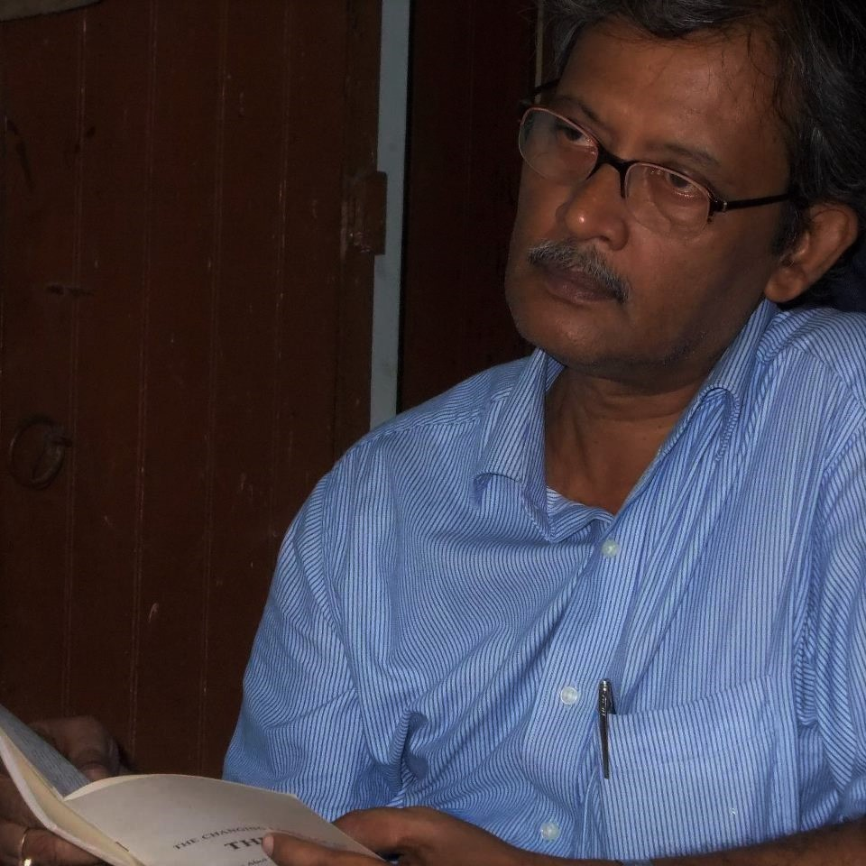
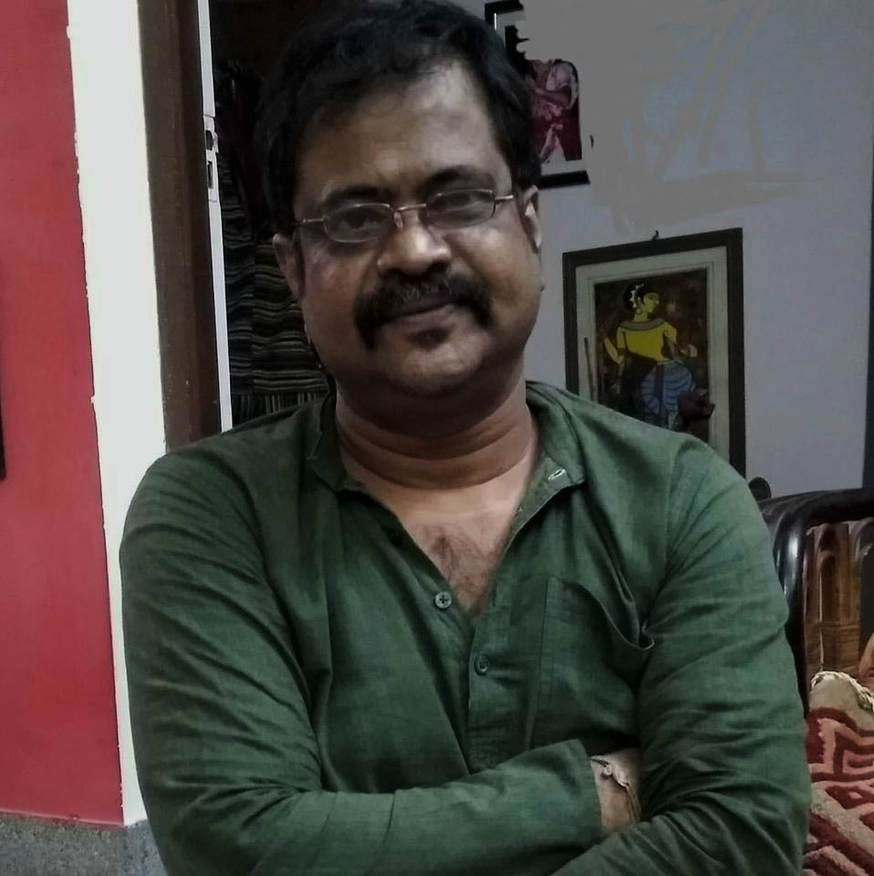
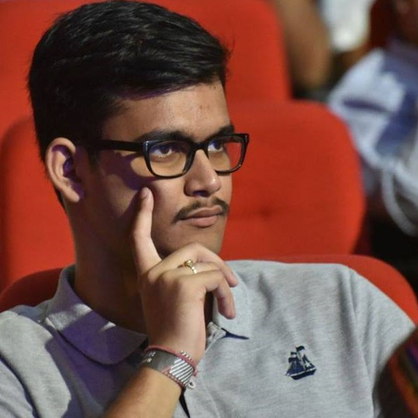

| Amitesh Dhar | ||
|---|---|---|
| He is currently persuing MSc Biotechnology at The Oxford College of Science. He has special interests in law and music. | amiteshdhar@youniquemag.org | |
| Anupam Banerjee | ||
| He is currently persuing masters on history from Jadavpur University. A sport geek, cinemaholic and part time photographer. | abanerjee@niche.youniquemag.org | |
| Anwit Shahi | ||
| He studies History at Jadavpur University, Kolkata, India. His fields of interest include the history of religion, religion and contemporary society, Christian and Muslim theology, mysticism, spirituality and Islamic jurisprudence. | anwitshahi@niche.youniquemag.org | |
| Arindam Dasgupta | ||
| He is a Hindustani classical vocalist. He started learning music from his mother Smt. Ganga Dasgupta and later took training from Smt. Manashi Guhathakurata, Late Smt.Dipti Mukhopadhyay and Ustad Rashid Khan.He believes, 'Biodata can not measure an artist'calls himself a servant of music. | adasgupta@niche.youniquemag.org | |
| Pragyasree Bhowmick | ||
| Pleasant mostly, an average teenager trying to survive the newly awarded 'adult' label. Besides being an open book otherwise, there's a part of her which can only be explored through the unfamiliar lanes in her stories. | pbhowmick@niche.youniquemag.org | |
| Ritwesh Chatterjee | ||
| He is currently persuing BSc Artificial Intelligence and Computer Science at University of Sheffield. His areas of interest include psychedelic, classic and alternative rock music along with percussions. | rchatterjee@youniquemag.org | |
| Sankar Chakraborty | ||
|  | schakraborty@niche.youniquemag.org | |
| Sougata Chattopadhyay (Editor) | ||
|  | He is the playwright and director of Kheyalkhola Grouptheatre Team. As a theatre personnel he has performed in NSD. His latest work, A Journey with Surpanakha, was a project financed by Ministry of Culture, India. | Email id: schattopadhyay@youniquemag.org |
| Souma Sekhar Gangopadhyay | ||
|  | He is a Graduate Student at School of Public Policy and Governance, Tata Institute of Social Sciences. He strictly mentions, "all the views expressed in the post are entirely personal and does not reflect the views of the institution in anyway". | Email id: sgangopadhyay@niche.youniquemag.org |